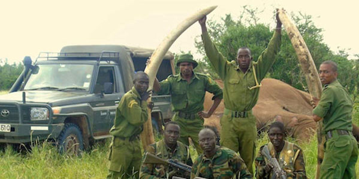

The Tsavo Trust operates the Big Tusker Project in conjunction with KWS and focusses on aerial and ground surveillance and data capture, backed up by the KWS's rapid reaction teams that deal with poaching incidents.
Tsavo Trust CEO Richard Moller would like to see one or two of the iconic Tsavo super tuskers enjoy a Presidential Security Decree, as was the case with the famous tusker called Ahmed of Marsabit National Park in Kenya in the early 1970s. If successfully repeated, this will be a momentous achievement in conservation leadership by an African president.
Please sign here to show your support in our demand that these Majestic Tuskers be watched over 24 hours a day, 7 days a week.